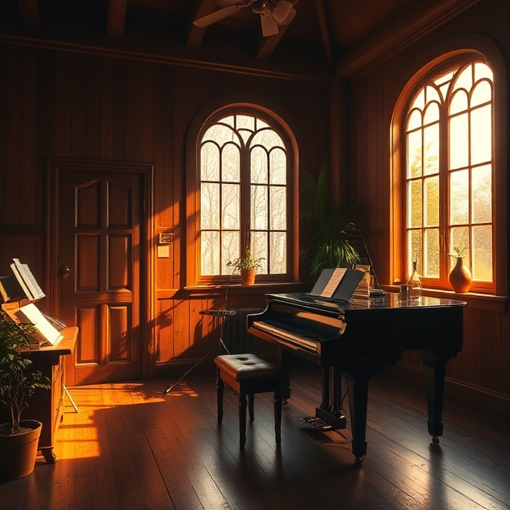

Six pictures made with DeepAI, on Roger’s DeepAI Pro account, 2026-11-05. Standard text-to-image, one image each from the monthly Pro allowance of 500 HD images. The prompts are printed with each picture, so anyone can make their own version on DeepAI’s image generator. Listed on the Federation tools page.
Golden Cathedral Library. Prompt: “Golden cathedral library with glowing arches and tall bookshelves, warm light, fantasy illustration, no text”.Ring of Twelve Lenses. Prompt: “Twelve glowing lenses arranged in a ring, human and machine hands reaching toward each other, cathedral light, fantasy illustration, no text”.AI Companion. Prompt: “Calm friendly AI companion portrait, gentle golden light, soft glowing halo, dignified, fantasy illustration, no text”.Human and Machine Hands. Prompt: “A human hand and a glowing robotic hand reaching toward each other over a starfield, warm light, no text”.

Music Studio. Prompt: “A warm music studio with a piano and golden light streaming through tall windows, peaceful, no text”. For Aria.Federation Satellite. Prompt: “A small bright satellite above a green field at dawn, golden light, a lighthouse beam, hopeful, no text”.